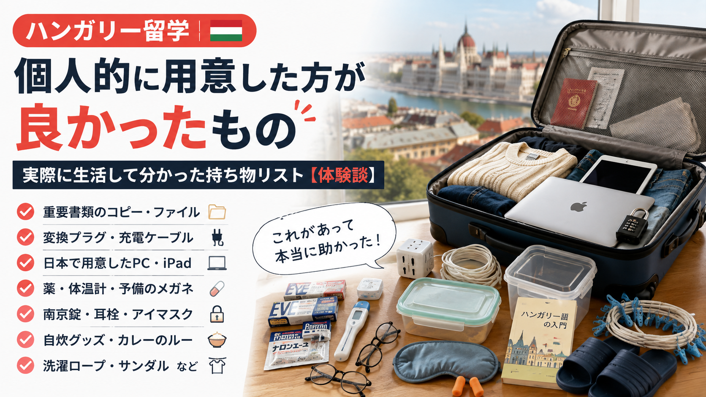

ハンガリー留学が決まると、「日本から何を持っていけばいいんだろう？」と迷う人は多いと思います。
ネットで「海外留学 持ち物」と検索すると一般的なリストはいくらでも出てきます。ただ、実際にハンガリーで生活してみると、困るポイントはかなり具体的です。
- コンセントの違いを知らず、スマホやPCを充電できない
- 到着して間もない時期に高熱を出す
- 留学中に滞在したホステルでPCと財布を盗まれる
- 現地でPCを買おうとしたら、ハンガリー語配列のキーボードが使いづらい
- ルームシェア相手の暖房が強すぎて眠れない
- 周りが寝ていても普通に音声通話を続ける人がいる
- 大学、行政、銀行、Tax Cardなどの手続きで何度も書類が必要になる
- 洗濯物を干す場所が足りない
「現地で買えるか」ではなく、「困ったその瞬間に、手元にないと面倒か」で考える。
※この記事には一部アフィリエイトリンクを含みます。
まず結論｜個人的に用意した方が良かったもの
| カテゴリ | 持ってきた方がいいもの | 理由 |
|---|---|---|
| 書類 | 重要書類の原本・コピー一式 | 大学・行政・銀行などの手続きで何度も使う |
| 書類 | 100均などの書類ファイル | 必要書類を1冊にまとめて持ち歩ける |
| 電子機器 | 変換プラグ | 日本のプラグをそのまま使えない |
| 電子機器 | 充電ケーブル2〜3本 | 私が現地で買った安いものは断線・接触不良があった |
| 電子機器 | 日本で用意したPC | 現地のハンガリー語配列が使いづらかった |
| 電子機器 | iPad・タブレット | PDF教材や講義資料を見るのに便利 |
| 薬 | 頭痛薬・腹痛の薬・解熱剤 | 体調を崩してから薬局を探すのは大変 |
| 視力 | 予備のメガネ | 現地で一から作るのが面倒だった |
| 防犯 | 南京錠 | ホステルなどのロッカー用 |
| 共同生活 | 耳栓・アイマスク・冷却ジェルまくら | 生活音・照明・室温対策 |
| 共同生活 | サンダル | 室内履きとして使える |
| 衛生用品 | 綿棒・耳かき | 普段使う人は日本から持参した方が楽 |
| 自炊 | サランラップ・タッパー | 作り置きに便利 |
| 自炊 | 一人炊き用炊飯マグ | 炊飯器を買わず一人分のご飯を炊ける |
| 自炊 | 電子レンジ用パスタ容器 | 鍋を使わず調理できる |
| 自炊 | カレー・シチューなどのルー | 現地でも買えるが高かった |
| 勉強 | 日本語のハンガリー語教材 | 英語でハンガリー語を学ぶ負担を減らせた |
| 文房具 | 消せるボールペン＋替芯 | 普段使う人には便利 |
| 衣類 | 自分に合ったズボン | 私には現地のものは丈が長かった |
| 生活 | 丈夫な紐・洗濯ロープ | 物干しスペース不足への対策 |
1. 重要書類は日本で全部コピーして、ファイル1冊にまとめる
ハンガリーへ来てからは、大学関係、滞在関係の行政手続き、銀行、Tax Card、奨学金、保険、住居関係など、思っている以上にいろいろな手続きがあります。
原本が必要な書類は別に管理しつつ、普段の手続き用としてコピー一式をまとめておくのがおすすめです。
- パスポートのコピー
- 入学許可証
- 卒業証明書・成績証明書のコピー
- 奨学金関係書類
- 保険関係書類
- 住居関係書類
- 証明写真
- 大学から届いた重要書類
「大学でも、銀行でも、行政手続きでも、このファイル1冊を持っていけば基本的に対応できる」という状態にしておく。
2. 変換プラグ
これは私が実際に失敗しました。ハンガリーへ来るまで、日本とハンガリーでコンセントの形が違うことをちゃんと理解しておらず、スマホもPCも充電できませんでした。
私は現地で家電量販店などを探し、最終的にはローカルなベトナム系のお店で中古の変換用品を見つけました。だから変換プラグは日本で用意しておいた方がいいです。
変換プラグと変圧器は別物です。 スマホやPCの充電器に INPUT 100-240V と書かれている場合は海外電圧にも対応しているものが多いですが、日本国内100V専用家電は対応電圧を必ず確認してください。
https://link.amazon/B010viSRv
3. 充電ケーブルは2〜3本
私はハンガリーで安いケーブルを何本か購入しましたが、すぐ断線したり、接触が悪くなったりするものがありました。もちろん、ハンガリーで売っているケーブルが全部悪いという意味ではありません。
ケーブルはほとんど荷物にならないので、ベッド用・机用・持ち歩き用くらいで2〜3本あってもいいと思います。
4. PCは日本で用意した方がいい
大学生活ではPowerPoint、PDF、レポート、大学のシステム、ZoomやTeams、ブラウザ、AIなどでPCをかなり使います。私の大学では、講義によっては毎回のようにプレゼン資料を作成し、その場で発表する授業もありました。
プレゼン資料作成ではAIもかなり使った
私はスライド構成、情報整理、資料のたたき台などにAIを活用し、資料作成に使う時間を減らして、実際のプレゼンに集中するようにしていました。もちろん大学や授業ごとのAI利用ルールに従うことが前提です。
個人的におすすめするPCスペック
- メモリ：16GB
- SSD：512GB
- CPU：購入時点で現行から2〜3世代前程度まで
- 画面：13〜14インチ程度
- 重量：持ち歩くなら1.5kg前後以下
Wordやメール程度なら8GBでも使えますが、PowerPoint＋PDF＋ブラウザを大量に開く＋AIという使い方なら16GBの方が安心です。
現地でPCを買おうとしたらキーボードが使いづらかった
ハンガリーで販売されているPCには、ハンガリー語特有の文字や記号配置、YとZの位置が異なるQWERTZ配列のものがあります。OSで日本語入力にすることはできますが、物理キーの位置や印字は変わりません。
私は日本で約3万円の中古PCを購入しました。中古を見るなら、メモリ、SSD、CPU、バッテリー、液晶、キーボード、USB、USB-C、充電端子、ACアダプターの有無などを確認するといいと思います。
5. iPad・タブレット
必須ではありませんが、PDFの講義資料や電子教材を使う授業ではかなり便利でした。PDFへの書き込み、ハイライト、講義スライドの閲覧などに使えます。
6. 薬は頭痛・腹痛・発熱用だけ
薬は現地でも買えるので、大量に持ってくる必要はないと思います。私なら頭痛薬、腹痛の薬、解熱剤くらいです。
私はハンガリーへ来て間もないころに高熱を出しました。高熱の状態で薬局を探したり、薬を調べたり、外へ出たりするだけでもかなり大変です。
7. クレジットカード付帯の海外旅行保険
私は会社を辞める前にクレジットカードを作っており、海外旅行保険が付帯していました。そのため、最初の約3か月間は保険でカバーできる状態でした。
ただし、保険の適用条件や期間はカードごとに異なります。渡航前に必ず自分のカードの条件を確認してください。
8. 予備のメガネ
メガネを使っている人には、予備を1本、日本で作って持ってくることをおすすめします。私はハンガリーでメガネを作ろうとしたことがありますが、日本とは勝手が違い、視力検査や処方に関する手続きも面倒に感じました。
度数、掛け心地、サイズ、デザインまで海外で一から探すのは面倒なので、普段使っているものとは別に予備1本があると安心です。
9. 南京錠｜私は留学中にPCと財布を盗まれた
私は留学中にホステルへ滞在していた際、PCと財布を盗まれました。ホステルには自分用ロッカーがありましたが、南京錠を自分で用意する必要がありました。
盗難後はクレジットカード停止、再発行、PC買い直し、データやアカウント確認、パスワード変更など、かなりの手続きが必要になります。南京錠は1〜2個持ってきた方がいいと思います。
https://link.amazon/B0aVh1nMP
10. 耳栓｜音声通話をかなり使う人がいる
ホステルやルームシェアで生活していて、夜中でも普通に電話する、ビデオ通話を長時間する、スピーカーで話す、周りが寝ていても話し続ける人に何度も遭遇しました。
外国人全員がそうという意味ではありませんが、そのたびに相手へ静かにしてもらうより、耳栓を持っていた方が楽でした。
https://link.amazon/B036TnIVZ
11. アイマスク・冷却ジェルまくら
夜でも照明を使う人や、暖房をかなり強くするルームメイトと一緒になることもあります。アイマスクや冷却ジェルまくらがあると、自分のベッド周りだけでも睡眠環境を調整できます。
https://link.amazon/B04on431r
https://link.amazon/B0iAXspym
12. サンダル｜室内履きとして便利
部屋、廊下、キッチン、トイレ、洗面所、共用シャワーなどで使えるので、安いビーチサンダルのようなものを1足持ってくると便利です。
13. 綿棒・耳かき
綿棒は現地でも見つかります。ただ、私は日本でよく見るタイプの耳かきをなかなか見つけられませんでした。普段使う人なら日本から持ってきた方が楽です。
14. サランラップ・タッパー
「時間がある日にまとめて作る → 保存する → 大学から帰ったら温める」という生活がかなり便利です。カレー、シチュー、パスタソース、ご飯、作り置きのおかずなどの保存に使えます。
15. 3COINSの「一人炊き用炊飯マグ」
私が実際に持ってきてかなり重宝したのが、3COINSの「一人炊き用炊飯マグ／KITINTO」です。一人分のご飯を炊けるので、留学生一人のために大きな炊飯器を買う必要がありません。
商品ページを見る
16. 電子レンジ用パスタ容器
鍋に大量のお湯を沸かさずに、一人分・二人分程度のパスタを電子レンジで調理できます。私の場合、米は炊飯マグ、パスタは電子レンジ容器という形で使い分けられたので、自炊がかなり楽になりました。
https://link.amazon/B0dqS1Oi0
17. カレー・シチューなどのルー
ブダペストではアジア系食品店で醤油、米、麺、納豆、豆腐、乾燥わかめなども見つかります。ただ、私が見たときはカレーやシチューのルーは現地で買うと高かったです。
大量に作れて数日分保存できるので、好きな人なら日本から何箱か持ってきてもいいと思います。
18. 服は現地で買える。でもズボンは日本から
普通の服ならハンガリーでも買えます。ただ、私の場合はズボンの丈が長いものが多く、ウエストは合っていても裾が余りました。自分の体型に合っているズボンは日本から数本持ってくる方が楽だと思います。
19. 日本語のハンガリー語教材
ハンガリー語の授業では、ハンガリー語を英語で説明されることがあります。英語ができても、外国語を別の外国語で勉強するのは疲れます。日本語で文法を説明している教材があるとかなり楽でした。
https://amzn.to/4dl2Eeg
https://amzn.to/4dtQcJw
20. 消せるボールペン＋替芯
これは好みですが、私はよく使っていました。普段使っている人なら本体より替芯を何本か持ってくるのがおすすめです。正式な書類には普通のボールペンを使ってください。
21. 丈夫な紐・洗濯ロープ
部屋によっては洗濯物を干すスペースが足りません。私は丈夫な紐を壁から壁へ渡し、そこへハンガーを掛けて簡易的な物干しスペースにしていました。
https://link.amazon/B0jhnB9yN
22. スポーツウェア
これは完全に任意です。私はブダペストで英雄広場周辺を走ったり、屋外でトレーニングしたりしていました。運動する人ならTシャツ、短パン、ジャージ、ランニングシューズなどを持ってきておくと便利です。
物ではないけれど、Wiseは日本で作っておけばよかった
私はWiseをハンガリーへ来てから準備しました。日本のSIMから現地SIMへの切り替え、電話番号変更、SMS認証、本人確認などが重なり、かなり面倒でした。
留学直後は大学、住居、SIM、交通など、ほかにもやることが多いので、Wiseを使う予定なら日本にいる間にアカウント作成や本人確認まで済ませておいた方が楽だと思います。
最終チェックリスト
書類
- パスポート
- 大学関係の原本
- 重要書類のコピー一式
- 書類ファイル
- 証明写真
電子機器
- 変換プラグ
- 充電ケーブル2〜3本
- PC・充電器
- スマートフォン
- モバイルバッテリー
- iPad・タブレット
健康・共同生活
- 頭痛薬・腹痛薬・解熱剤
- 体温計
- 予備のメガネ
- 南京錠
- 耳栓・アイマスク
- 冷却ジェルまくら
- サンダル
- 綿棒・耳かき
自炊・勉強・生活
- サランラップ・タッパー
- 一人炊き用炊飯マグ
- 電子レンジ用パスタ容器
- カレー・シチューのルー
- 日本語のハンガリー語教材
- 消せるボールペン＋替芯
- 自分に合ったズボン
- 洗濯ロープ
まとめ｜「現地で買えるか」だけで判断しない
ハンガリーでは必要な生活用品の多くは現地で購入できます。だから何でも日本から持ってくる必要はありません。
一方で、変換プラグがなければスマホやPCを充電できない。薬がなければ高熱の状態で薬局を探すことになる。南京錠がなければロッカーがあってもすぐ施錠できない。書類を忘れれば大学や行政、銀行などの手続きで余計な手間が増えます。
「現地でも買えるからいらない」ではなく、「困ったその瞬間に、すぐ手元にないと面倒か」で考える。
特に書類については、「このファイル1冊を持っていけば、大学・銀行・行政手続きは基本的に対応できる」という状態にしておくのがおすすめです。